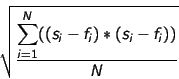

The polynomial fitting window allows you to fit a polynomial of selected degree to various selected ranges of the current spectrum. You can select to use errors as weights for the fit and can save the fits on the global list as spectra in their own right. Fitting a polynomial is generally a pre-requisite to fitting spectral lines.
The Degree of polynomial drop-down list shows a series possible values for the degree of the polynomial that will be fitted. Obviously this should be chosen to match the expected complexity of the background.
The Use errors as weights checkbox is only effective if the spectrum being fitted has data errors.
The Subtract fit from spectrum series of radio buttons allows you to ask for the creation of a spectrum that is the difference between the spectrum and the polynomial fit. Use the As a ceiling option for absorption lines, and As base line for emission lines. These subtracted spectra appear on the global list and are added to the plot for display.
The Divide spectrum by fit checkbox allows you to ask for the creation of a new spectrum that is the result of dividing the spectrum by the polynomial fit. You will probably want to do this before attempting to fit absorption lines so that the continuum is normalized. The new spectrum appears on the global list (with the name Ratio: <spectrum name> by <polynomial name> and can plotted in a new window before fitting the lines.
Coordinate ranges
This part of the window is used to define the regions of the spectra that you want to fit the polynomial to.To add a region press the Add button and then drag out a region in the display area of the plot window. This should result in the creation of a green rectangular figure.
You can interact with the figure, moving it side-to-side and resizing it. To do this point at the figure and press the left mouse button. This `selects' the figure and adds grips to its exterior. Note that it also becomes the selected row in the Coordinate ranges: table. To move the figure just drag it and to resize it drag a grip (the little black squares). The associated coordinate range in the table updates with these changes.
To add a second range just press Add and repeat. The ranges can be overlapped or not.
To fine tune the ranges you can edit the values in the ranges table, just point at the cell you want to change and double click the left mouse button. This should enable the text editing cursor. Just make the modifications you want and press <Return> to make the changes permanent. (Note: if your spectra have sky coordinates shown for the X axis, then you should use the same format for your edits).
To read a set of ranges from a disk file choose the File->Read ranges menu item. The format of the input file is simple. It should have two fields separated by whitespace or commas. Comments are indicated by lines starting with a hash (#) and are ignored. You can also save the ranges to disk (File->Save ranges).
When you've got the ranges that you want to fit, press the Fit button. This creates a new spectrum on the global list, called Polynomial Fit: <n> and displays it in the plot. You can save this to disk, or display in another plot etc., just like any other spectrum. To just fit one or a subset of the ranges select the rows and then press the Fit selected button.
To clear any fits created by this window press the Delete fits button. To clear the ranges from the display area and delete the fits press the Reset button. To keep any fits just close the window.
Fit status
The text area shows some facts and figures about the fitting process. The RMS value is the root mean square difference between the fit and the spectra data i.e.:

Where si and fi are the data values of the spectrum and the fit (possibly interchanged) and N the number of positions in the spectrum.
SPLAT-VO -- A VO-enabled Spectral Analysis Tool